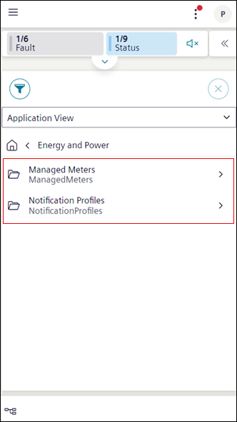
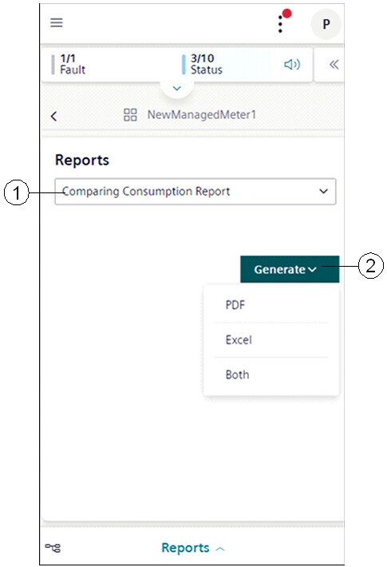
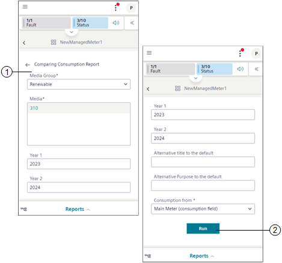
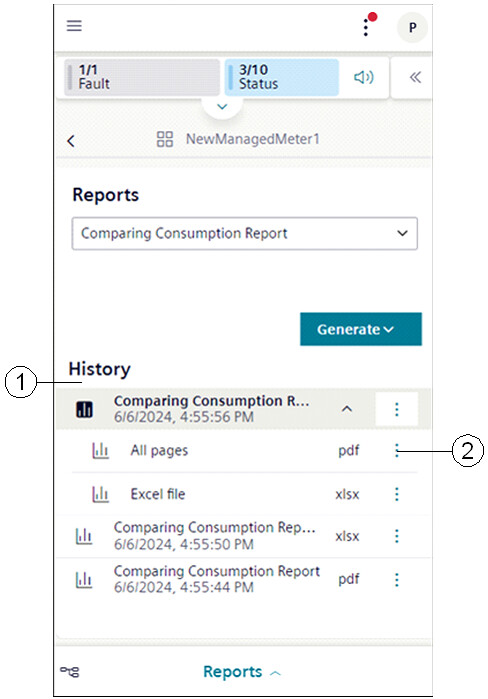

Advanced Report Workspace for Mobile Flex
To view the Advanced Report select any system browser node on which web application rule is configured. You can also select a child node by tapping next to the folder.

Reports Section

|
1 | Reports drop-down list | Displays the list of configured reports on the system browser object. |
2 | Generate | Provides options to generate advanced reports in PDF or Excel formats. On selecting Both, the selected report is generated as a PDF and Excel. |
Parameter Information

|
1 | Parameter information section | Displays the parameter information for generating the advanced report. |
2 | Run | Executes the advanced report and displays the entry in the History area. |
History Section

|
1 | History | Displays logs of the generated report in PDF and Excel format. |
2 | | Displays the following options: |